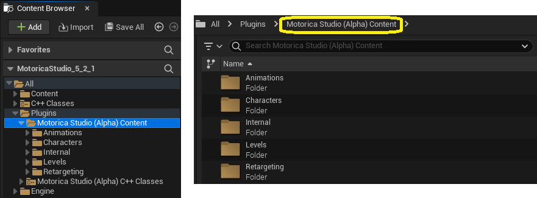

Retargeting
Motorica Studio includes assets that demonstrate retargeting from the Motorica character to other characters.
For a list of all plugin assets, go here.
Note: Retargeting in UE 5.0 is not ideal. You are encouraged to use UE 5.1 and above. Example issues seen here and here.
Assets
First, enable "Show Plugin Content" in the Content Browser settings.

Then, navigate to Plugins > Motorica Studio Content. (The folders may look different depending on which version of Motorica Studio you are using.)

Retargeting folder
- BP_RuntimeRTG_Base - A spawnable
Actor Blueprintthat sets up runtime retargeting between the Motorica skeleton and other skeletons. This blueprint serves as a base which other blueprints can extend from. - LS_RuntimeRTG - A
Level Sequenceasset demonstrating runtime retargeting from the Motorica skeleton to a set of other skeletons.
MetaHuman
- ABP_metahuman_MoStudio -
Animation Blueprintused for runtime retargeting from the Motorica skeleton to the MetaHuman skeleton. It uses theRTG_metahuman_MoStudioIK Retargeter asset. - BP_RuntimeRTG_metahuman_MoStudio - A spawnable
Actor Blueprintthat extends fromBP_RuntimeRTG_Base. It sets up runtime retargeting from the Motorica skeleton to the MetaHuman skeleton usingABP_metahuman_MoStudio. - IK_metahuman_MoStudio -
IK Rigasset that configures the default MetaHuman skeleton for retargeting. This is identical to the default MetaHuman IK Rig (confirmed UE 5.2). - RTG_metahuman_MoStudio -
IK Retargeterasset that retargets from theIK_MoStudioIK Rig to theIK_metahuman_MoStudioIK Rig. The MetaHuman retarget pose is edited to match the T-pose of the Motorica skeleton. IK retargeting is disabled.
Mixamo
- ABP_Mixamo_Mutant -
Animation Blueprintused for runtime retargeting from the Motorica skeleton to the Mixamo Mutant skeleton. It uses theRTG_Mixamo_MutantIK Retargeter asset. - BP_RuntimeRTG_Mixamo_Mutant - A spawnable
Actor Blueprintthat extends fromBP_RuntimeRTG_Base. It sets up runtime retargeting from the Motorica skeleton to the Mixamo Mutant skeleton usingABP_Mixamo_Mutant. - IK_Mixamo_Mutant -
IK Rigasset that configures the Mixamo Mutant skeleton for retargeting. It contains bone chains for the spine, legs, arms, head and root, excluding fingers. - RTG_Mixamo_Mutant -
IK Retargeterasset that retargets from theIK_MoStudioIK Rig to theIK_Mixamo_MutantIK Rig.
The assets above are for the Mixamo Mutant character. Other mixamo characters have similar assets.
MotoricaStudio
- ABP_MoStudio -
Animation Blueprintused for runtime retargeting from the Motorica skeleton to itself. It uses theRTG_MoStudioIK Retargeter asset. - BP_RuntimeRTG_MoStudio - A spawnable
Actor Blueprintthat extends fromBP_RuntimeRTG_Base. It sets up runtime retargeting from the Motorica skeleton to itself usingABP_MoStudio. - IK_MoStudio -
IK Rigasset that configures the Motorica skeleton for retargeting. It contains bone chains for the root, hips, spine, legs, arms, and head, except fingers. For compatibility, some bones like the root and shoulders have multiple chains. Find the ones that work best for you target skeleton. You can also copy the asset and customize the bone chains completely to improve retargeting to your character. MostIK Retargeterassets in the plugin use this IK Rig as the retargeting source. - IK_MoStudio_legacy - This is the legacy
IK Rigasset that was provided in Motorica Studio v0.1.0 calledIK_Motorica. You should useIK_MoStudiofrom now on. If you are using the oldIK_MotoricaIK Rig, update your references to point toIK_MoStudio_legacy. - RTG_MoStudio -
IK Retargeterasset that retargets from theIK_MoStudioIK Rig to itself. This is mainly used for debugging purposes.
UE5 Mannequin
- ABP_Mannequin_MoStudio -
Animation Blueprintused for runtime retargeting from the Motorica skeleton to the UE5 mannequin skeleton. It uses theRTG_Mannequin_MoStudioIK Retargeter asset. - BP_RuntimeRTG_Mannequin_MoStudio - A spawnable
Actor Blueprintthat extends fromBP_RuntimeRTG_Base. It sets up runtime retargeting from the Motorica skeleton to the UE5 mannequin skeleton usingABP_Mannequin_MoStudio. - IK_Mannequin_MoStudio -
IK Rigasset that configures the default UE5 mannequin skeleton for retargeting. This is identical to the default UE5 mannequin IK Rig (confirmed in UE 5.2). - RTG_Mannequin_MoStudio -
IK Retargeterasset that retargets from theIK_MoStudioIK Rig to theIK_Mannequin_MoStudioIK Rig. The UE5 mannequin retarget pose is edited to match the T-pose of the Motorica skeleton. IK retargeting is disabled.
How-To
A detailed guide on how to do retargeting is missing. For now, you are encouraged to explore the included retargeting assets in the Content Browser yourself. Open them to see how retargeting is configured, specifically the IK Rig and IK Retargeter assets.
You can also refer to these YouTube tutorials for more information:
- Motorica - Generative AI for animation - Unreal
- Motorica - Generative AI for animation - Plugin Unreal
- Motorica a Metahuman con Mixamo Animation Retargeting 2
Lastly, feel free to reach out on our Discord server.